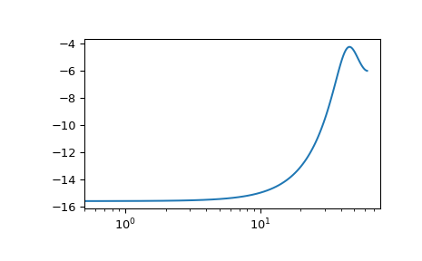
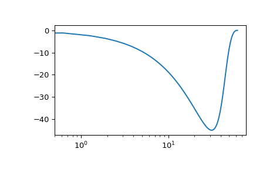

scipy.signal.dbode¶
-
scipy.signal.dbode(system, w=None, n=100)[source]¶ Calculate Bode magnitude and phase data of a discrete-time system.
- Parameters
- systeman instance of the LTI class or a tuple describing the system.
The following gives the number of elements in the tuple and the interpretation:
1 (instance of
dlti)2 (num, den, dt)
3 (zeros, poles, gain, dt)
4 (A, B, C, D, dt)
- warray_like, optional
Array of frequencies (in radians/sample). Magnitude and phase data is calculated for every value in this array. If not given a reasonable set will be calculated.
- nint, optional
Number of frequency points to compute if w is not given. The n frequencies are logarithmically spaced in an interval chosen to include the influence of the poles and zeros of the system.
- Returns
- w1D ndarray
Frequency array [rad/time_unit]
- mag1D ndarray
Magnitude array [dB]
- phase1D ndarray
Phase array [deg]
Notes
If (num, den) is passed in for
system, coefficients for both the numerator and denominator should be specified in descending exponent order (e.g.z^2 + 3z + 5would be represented as[1, 3, 5]).New in version 0.18.0.
Examples
>>> from scipy import signal >>> import matplotlib.pyplot as plt
Transfer function: H(z) = 1 / (z^2 + 2z + 3)
>>> sys = signal.TransferFunction([1], [1, 2, 3], dt=0.05)
Equivalent: sys.bode()
>>> w, mag, phase = signal.dbode(sys)
>>> plt.figure() >>> plt.semilogx(w, mag) # Bode magnitude plot >>> plt.figure() >>> plt.semilogx(w, phase) # Bode phase plot >>> plt.show()
